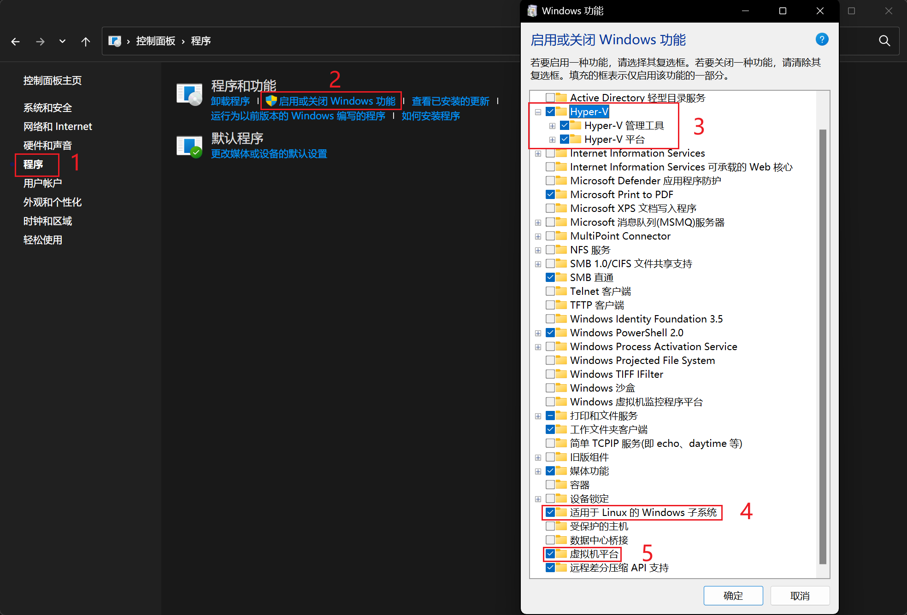
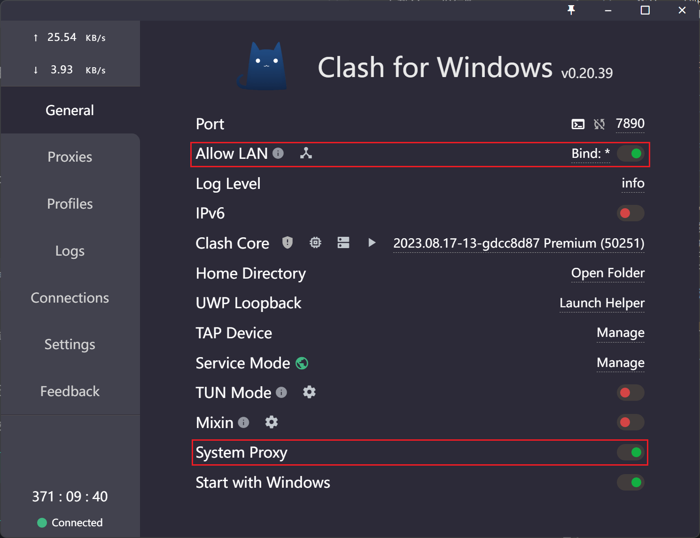

13. WSL
WSL（Windows Subsystem for Linux）是 Windows 提供的一个 Linux 子系统，它允许你在 Windows 上运行 Linux 程序。 简单来说，WSL 是微软提供的一个官方 Linux 虚拟机，具有更小的性能开销和接近原生 Linux 的体验。
13.1 安装 WSL
Warning
在安装 WSL 之前，请确保你没有安装过任何 Linux 发行版，否则可能会导致安装失败。 可以使用如下命令查看已安装的 Linux 发行版：
如果已安装 Linux 发行版，可以使用如下命令卸载：启动 Windows 虚拟化功能
打开控制面板，在程序中选择“启用或关闭 Windows 功能”，勾选“Hyper-V”、“虚拟机平台”和“适用于 Linux 的 Windows 子系统”，然后点击确定，你可能需要重启电脑来让配置生效。

下载 Linux 内核更新包
运行下载的更新包。
将 WSL 2 设置为默认版本
打开 PowerShell，将 WSL 2 设置为默认版本。
下载 Linux 发行版
选择你所需要的 Ubuntu 版本下载，推荐安装 Ubuntu 20.04。
提取并安装 Linux 分发版
将下载的 .appx 文件移动至任意一个文件夹，然后使用 PowerShell 提取 <DistributionName>.AppxBundle 包的内容。
Rename-Item .\<DistributionName>.AppxBundle .\<DistributionName>.zip
Expand-Archive .\<DistributionName>.zip .\<DistributionName>
进入 <DistributionName> 文件夹，找到 *_x64.appx 文件，使用 PowerShell 解压提取该文件。
进入 <Name> 文件夹，双击运行 ubuntu.exe 安装 Linux 发行版。
输入用户名和密码之后，WSL 安装成功。
同时，我们可以发现，在 ubuntu.exe 的同级目录下，会生成一个 .vhdx 的文件，这个文件就是 WSL 的虚拟磁盘。
（可选）安装第二个 Linux 发行版
从 Ubuntu WSL 镜像 中下载适用于 WSL2 的 Ubuntu 镜像压缩包保存到本地。
一般选择 ubuntu-*-server-cloudimg-amd64-wsl.rootfs.tar.gz。
使用 PowerShell 导入镜像：
将 <Distribution Name> 改成自己想要的名字，比如 ubuntu-2204，以后启动关闭会用到。
使用 Ubuntu 实例目标安装路径（文件夹）替换掉 <Installation Folder>。
最后用上一步下载的 Ubuntu 镜像存储位置替换掉 <Ubuntu WSL2 Image path>。
以上命令运行成功后可以使用 wsl -l -v 查看已安装的发行版。
使用 wsl -d <Distribution Name> 启动指定的发行版。
修改默认用户
参考该博客中的第五步至第七步。
13.2 网络配置（代理）
为了让 WSL 能够访问外网，需要配置 WSL 的网络。
Windows 代理配置
需要确保 Windows 处于代理的状态，并且允许局域网代理。

WSL 虚拟网卡 IP
WSL 通过虚拟以太网接口（vEthernet）与 Windows 主机的通信。 如果需要配置代理，需要知道 WSL 的虚拟网卡 IP 地址，让 Windows 的代理服务能够转发该 IP 的流量。 我们可以通过脚本自动获取该 IP 地址。
在 WSL 的 ~/.bashrc 文件中添加以下内容。
该命令会自动获取 vEthernet 的 IP 地址。
WSL 代理配置
修改 ~/.bashrc 文件。
利用上一步获取的 IP 地址，设置 WSL 的代理。 如果你使用的是 Clash 代理，那么端口号应该是 7890。
手动获取 vEthernet IP 地址
可以在 powershell 中通过以下命令查看 WSL 的虚拟网卡 IP 地址。
$ ipconfig
...
以太网适配器 vEthernet (WSL (Hyper-V firewall)):
连接特定的 DNS 后缀 . . . . . . . :
本地链接 IPv6 地址. . . . . . . . : fe80::33eb:9f74:8b73:253f%49
IPv4 地址 . . . . . . . . . . . . : 172.18.48.1
子网掩码 . . . . . . . . . . . . : 255.255.240.0
默认网关. . . . . . . . . . . . . :
其中 IPv4 地址即为 WSL 的虚拟网卡 IP 地址。
如果代理成功，那么在 WSL 中的命令行中输入 curl ipinfo.io 应该能够得到类似的输出：
{
"ip": "152.70.124.200",
"city": "San Jose",
"region": "California",
"country": "US",
"loc": "37.2329,-121.7875",
"org": "AS31898 Oracle Corporation",
"postal": "95119",
"timezone": "America/Los_Angeles",
"readme": "https://ipinfo.io/missingauth"
^C
Bug
配置代理后，curl ipinfo.io 会出现无法终止的情况，可以使用 Ctrl+C 终止。
Tun 模式
如果你觉得上述配置太麻烦，可以尝试在你的代理软件中使用 Tun 模式，这样 WSL 就可以直接访问外网了。
13.3 Python 环境搭建
由于 Python 各个版本之间并不兼容，因此对于每一个 Python 项目，我们都需要创建一个独立的虚拟环境。 这样可以避免不同项目之间的依赖冲突。 我们推荐使用 anaconda 来管理 Python 环境。
安装 miniconda
根据官方文档安装即可。
使用虚拟环境
conda env list # 查看已有环境·
conda create -n <env_name> python=3.8 # 创建一个新环境
conda activate <env_name> # 激活环境
conda list # 查看环境中已安装的包
which python # 查看当前环境的 Python 路径
Todo
More Details!!!